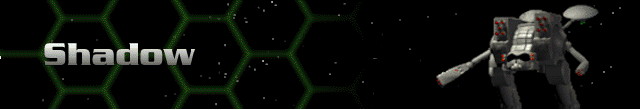
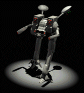

› |
› |
› |
› |
Shadow |

|
Chassis: Shadow The Shadow was originally intended to be an exploration vehicle. It is one of two Hercs with an extensive sensor array. Sensor arrays allow broad terrain mapping and remote targeting of the enemy. Since being pressed into military service, the Shadow has been outfitted with energy weapons and missile pods. Standard equipment: Scout Sensor 22.8 Amplitude, a Fission 100 reactor, Bertrand-Altase targeting computer, Shield 300 shield class, Chemical 108 battery, Standard Life Support, 5cm armor, Pre-Flexive drive system, a jump capability of four, and maximum movement yield. Available at Tech Level 0. |
 |
Max. Weapons Capabilities
These are all of the weapons which can be mounted to this Herc once you have reached all Technology levels through promotions.
| Energy | Missile | Cannon | Plasma | ELF | Adv. Tech. |
|---|---|---|---|---|---|
| SE400 Laser Cannon | SP Missiles | Fusion Flamer | Lt. ELF | Neutron Gun | |
| SC400 Comp. Laser | HOG Missiles | Auto ELF | Thermal Lance | ||
| SP500 Lt. Pulse Laser | MicroMissiles | Chain ELF | EMP | ||
| Thermal Needler | |||||
| EMP Blaster |